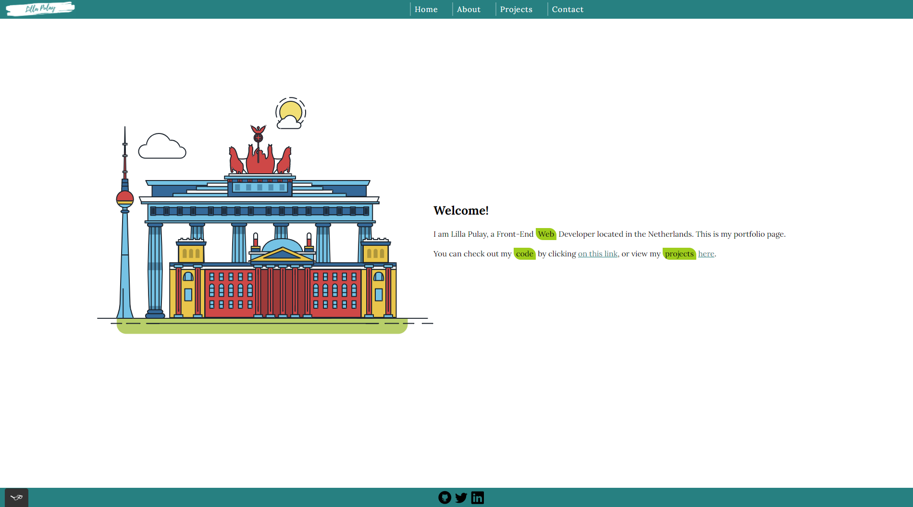

The beginning
I started building this website when I began to study Web Development. As it was the very first assignment of the cource, the website only used HTML and CSS. The goal of this project was to understand how websites work, learn and practice version control and discover basic hosting options.
The website you are currently browsing is the successor of this project and the continuation of the same GitHub repository. You can check out the GitHub repo here.
After finishing the course, I purchased my own domain and planned a million updates. I added a contact form and a lot more text content than earlier, but I was never happy with the outcome. For a while I felt way too accustomed to the old, 4-page structure, but as I wanted a 1-page type of website for a long time, I decided to rebuild the whole website.
Still, a portfolio website is never finished - not only because of the new projects that need to be added, but also because it needs to reflect the professional development of its creator. Because of this, I always have new ideas that I'm planning to implement.